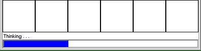
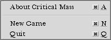
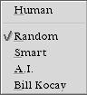
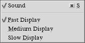
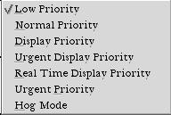
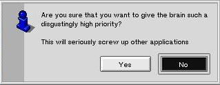
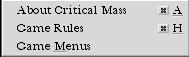

Interface
(NB: Complete to 1.01 only: see What's Newfor new features.)
When it is your turn, click on a cell to place the next atom. The computer player will respond by placing another atom. If no explosions are caused by the computer's move, don't be surprised if you don't see the move. If this happens, just make your next move anyway.
You will also notice a status bar at the bottom of the window. When playing against A.I. or Bill Kocay opponents, this bar shows approximately how much thinking the computer has done for its next move. You will probably notice that it starts thinking before your explosions have finished.

Other than that, most game options are on the menus. So here are the menus, with a description of what each item does.
Game Menu:

- About Critical Mass:
Hmmm. I wonder what this does?
- New Game:
Starts a new game, abandoning any game in progress.
- Quit:
Self-explanatory, I hope!
Red and Blue Menus:

These menus set what kind of players are in the game.
- Human:
If you set both players to "Human", you can blow your friends up. Or they can blow you up. It depends on who is listening to those voices from another dimension, doesn't it?
- Random:
A computer brain that picks moves at random. Makes for an easy shift at the nuclear plant.
- Smart:
Up against a computer that is probing for an entrance to this universe. But hey, it must have been programmed by Bill Gates, because you can still beat it.
- A.I.:
In the alternate universe, A.I. doesn't stand for "Artificial Idiocy". Getting tougher to beat . . .
- Bill Kocay:
A robotic hero from the distant past of the other dimension, capable of thinking of many things simultaneously (i.e. Bill is multi-threaded - watch the blinking lights if you are lucky enough to have a dual or quad processor). Let me know if you can beat this level without assistance.
Options:

- Sound:
Toggles those annoying explosion sounds on/off.
- Fast Display:
Shows the effects of explosions at about 3 frames / second.
- Medium Display:
Shows the effects of explosions at about 2 frames / second.
- Slow Display:
Shows the effects of explosions at about 1 frames / second.
Priority:

When playing against Bill Kocay (the hardest level), the brain is multi-threaded. This menu allows you to change the priority assigned to the threads. The options provided are the standard priorities in BeOS.
Please note that you should normally restrict yourself to the top two priorities, since game prediction is a classic low-priority, non-interactive task.
However, for seriously geeky folk, you can set the priority so that the brain threads pre-empt all other tasks in the system (such as mouse movement and menus). If you attempt to set the priority to one of the "real-time" values (the bottom 3), you will get a dialog box warning you that you will slow all other processing down. Note that you will not damage anything this way, but you may have to wait for the game to finish before doing anything else!

Help:

- About Critical Mass:
A second link to the about box.
- Game Rules:
A brief description of the game rules.
- Game Menus:
An equally brief description of the game menus.